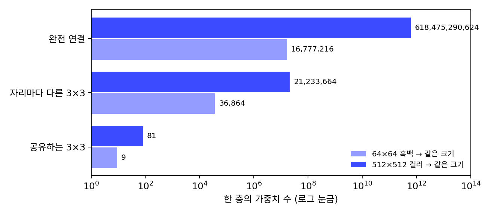
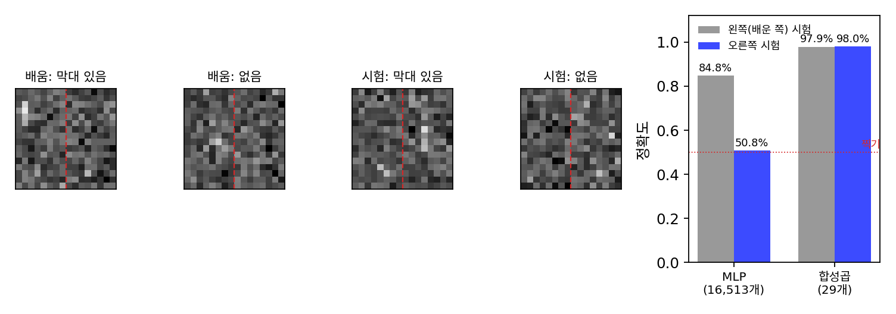

가중치 공유: 모든 자리에서 같은 커널을 쓴다
이웃 평균도, 윤곽 커널도 줄의 모든 칸에서 같은 비율을 썼다. 너무 당연해 보여 따로 말할 거리도 없어 보인다. 그런데 MLP의 눈으로 보면 이것은 강한 제약이다. MLP는 출력 칸마다 입력 칸 전부에 저마다 다른 가중치를 둔다. 가로세로 16칸 그림에서 세로 막대를 찾는 실험에서, 막대가 왼쪽 절반에만 있는 그림으로 배운 MLP는 오른쪽 절반의 막대를 50.8%만 맞혀 동전 던지기와 같았다. 모든 자리에서 같은 커널을 쓰기로 하면 무엇이 달라질까?
역사: 연결 여러 개를 매개변수 하나로 묶기
1980년 일본 NHK 방송기술연구소의 후쿠시마 구니히코(福島邦彦)는 「위치가 옮겨져도 영향받지 않는 패턴 인식」을 내건 신경망 네오코그니트론을 발표했다. 같은 특징을 찾는 단위들을 그림 곳곳에 늘어놓고 층을 쌓는 구조였다. 다만 학습은 정답 없이 스스로 조직하는 방식이었다.
1989년 미국 벨 연구소의 르쿤(Yann LeCun)과 동료들은 같은 생각을 역전파와 묶었다. 과제는 미국 우편 서비스가 제공한 편지 봉투의 손글씨 우편번호 숫자였다. 숫자 하나를 가로세로 16칸으로 맞춘 그림 7,291장으로 학습하고 2,007장으로 시험했다. 이들은 첫 층의 단위마다 입력의 5 × 5칸 이웃만 보게 하고, 한 특징 지도에 속한 단위들은 모두 같은 가중치 25개를 쓰게 묶었다. 논문은 이 기법을 「여러 연결을 매개변수 하나로 조종하는 것」이라 설명하고, 이렇게 하면 매개변수가 크게 줄 뿐 아니라 과제의 기하에 대한 정보를 신경망에 담을 수 있다고 적었다. 정확한 위치는 중요하지 않으니, 같은 특징을 여러 자리에서 찾으면 된다는 것이다. 신경망 전체의 연결은 64,660개였지만 독립인 매개변수는 9,760개였다. 시험 숫자의 5.0%를 틀렸다. 같은 논문에서 은닉 단위 40개짜리 완전 연결 신경망(연결 10,690개)은 학습 숫자는 1.6%만 틀리면서 시험 숫자는 8.1%를 틀렸다.
세 가지로 잇기: 전부, 이웃만, 이웃만 같은 비율로
가로세로 64칸 흑백 그림을 받아 같은 크기의 그림을 내놓는 층을 세 가지로 만들어 가중치를 세 보자.
- 전부 잇기(MLP): 출력 4,096칸이 저마다 입력 4,096칸 모두에 가중치를 둔다. 4,096 × 4,096 = 16,777,216개.
- 이웃만 잇기: 출력 칸마다 입력의 3 × 3 이웃만 보되, 자리마다 다른 9개를 둔다. 4,096 × 9 = 36,864개.
- 이웃만 같은 비율로 잇기(합성곱): 모든 자리가 같은 9개를 쓴다. 9개.
그림 한 변의 칸 수를 n, 커널 한 변을 k라 하면 이렇게 적힌다.
모든 자리에서 같은 커널을 쓰는 것을 가중치 공유 (모든 자리가 같은 가중치를 나눠 쓰기 / weight sharing)라 한다. 공유하면 가중치 수가 그림 크기 n과 상관없어진다. 512 × 512 컬러 그림이라면 전부 잇기는 6,184억 개, 이웃만 잇기도 2,123만 개인데, 공유하는 3 × 3 커널은 81개다(빨강·초록·파랑 세 수를 받아 세 수를 내므로 9 × 3 × 3).

줄어든 것은 수만이 아니다. 막대 실험을 합성곱으로 다시 해 보자. 세로 5칸 커널 4개를 그림 전체에 걸고, 커널마다 모든 자리 가운데 가장 큰 출력 하나만 골라 마지막 판정에 넘긴다. 매개변수는 커널 4 × 5개, 치우침 4개, 마지막 판정의 5개를 합쳐 29개다. MLP(은닉 단위 64개)는 16,513개다. 같은 그림 2만 장으로 배운 뒤 시험하면 합성곱은 왼쪽 막대를 97.9%, 오른쪽 막대를 98.0% 맞힌다.

까닭은 공유 그 자체에 있다. MLP의 오른쪽 절반 가중치는 학습하는 동안 막대를 한 번도 보지 못했다. 오른쪽 입력 칸에서 온 것은 잡음뿐이었으니 그 가중치가 막대에 반응하도록 바뀔 까닭이 없다. 합성곱의 커널은 왼쪽에서 배웠어도 오른쪽에서 똑같이 쓰인다. 입력을 몇 칸 옮기면 출력도 그만큼 옮겨질 뿐 모양은 같고, 모든 자리 가운데 가장 큰 값은 옮기기 전과 같다.
ML에서: 잡음은 자리를 가리지 않는다
디퓨전 모델이 그림에 섞는 잡음은 칸마다 같은 분포에서 따로 뽑는다. 왼쪽 위 칸의 잡음이나 오른쪽 아래 칸의 잡음이나 성질이 같으니, 잡음을 걷는 규칙도 자리마다 따로 배울 까닭이 없다. 가중치 공유가 잘 맞는 문제다. 또 공유한 커널은 그림 크기와 상관없는 수로 이루어져 있어서, 학습할 때와 다른 크기의 그림에도 같은 층을 그대로 걸 수 있다.
문제 4. 컨베이어 벨트의 검수원
공장 컨베이어 벨트에 칸이 20개 있고, 불량품 사진 400장이 칸마다 고르게 흩어져 있다. 두 방식으로 불량 검수를 가르친다. (A) 칸마다 다른 검수원 20명이 자기 칸의 사진으로만 배운다. (B) 검수 기준표 한 장을 모든 칸의 사진으로 함께 만들어 20칸에서 같이 쓴다. (가) 검수원 한 명(또는 기준표 한 장)이 배우는 데 쓴 사진은 몇 장인가? (나) 벨트에 21번째 칸을 새로 달면 두 방식은 그 칸을 어떻게 검수하는가?

(A)는 400 ÷ 20 = 20장, (B)는 400장이요. 그런데 (A)가 더 꼼꼼할 것 같아요. 자기 칸만 전담하니까요.

불량품의 모양이 칸에 따라 달라지나요?

아뇨, 어느 칸에 놓이든 흠집은 흠집이죠. 그러면 (A)는 같은 걸 20명이 20장씩 따로 배우는 거네요. 한 명이 400장 보는 게 낫겠어요.

(나)는 (B)면 기준표를 그대로 쓰면 되고, (A)는 21번째 칸 검수원이 아무것도 배운 적이 없어. 막대 실험에서 MLP가 오른쪽을 못 맞힌 거랑 같아.

그럼 (A)가 나은 경우는 없을까요?

칸마다 불량 모양이 정말 다르면요. 예를 들어 20번 칸에만 다른 기계가 붙어서 그 칸에만 생기는 흠이 있다면, 공유한 기준표는 그걸 따로 배우기 어렵겠어요.

그래요. 공유는 「어느 자리에서나 같은 규칙」이라는 가정을 구조에 넣은 거예요. 그 가정이 맞는 문제에서는 같은 사진으로 스무 배 많이 배우는 셈이고요.
조별 과제 채점을 조교 스무 명이 한 조씩 따로 하면 기준이 들쭉날쭉한데, 채점 기준표 하나로 하면 고르게 되는 거랑 같네요.
문제 5. 옮기면 옮겨지는가
길이 10인 줄의 2번 칸(0번부터 센다)에만 4가 있고 나머지는 0이다. 바깥은 0으로 채운다. (가) 커널 [¼, ½, ¼]을 모든 자리에 걸면 출력은 무엇인가? 같은 4를 6번 칸으로 옮기면? (나) 이번에는 자리마다 다른 커널을 쓴다. 0~4번 출력 칸은 [¼, ½, ¼], 5~9번 출력 칸은 [0, 1, 0](자기 칸만)이다. 4가 2번 칸에 있을 때와 6번 칸에 있을 때 출력을 견주어라.
(가)는 1, 2, 1이 1~3번 칸에 나와. 6번으로 옮기면 5~7번에 1, 2, 1. 모양은 그대로 네 칸 옮겨졌어.
(나)도 같겠죠. 커널 둘 다 합이 1이니까 4가 어디 있든 잘 나오잖아요.
6번 칸의 4는 어느 출력 칸들이 보죠? 그 칸들의 커널은요?

5, 6, 7번 출력이요. 셋 다 [0, 1, 0]이라 6번만 4를 받고 5번과 7번은 0이에요. 출력이 0, 4, 0이네요. 2번 칸에 있을 때는 1, 2, 1이었는데요.

같은 점인데 어디 놓였느냐에 따라 번지기도 하고 안 번지기도 해. 그러니까 「옮기면 옮겨진다」는 커널을 공유해서 생긴 성질이지, 이웃만 보는 것만으로는 안 생기는 거구나.
그래요. 이웃만 보되 자리마다 다른 가중치를 쓰면 매개변수는 줄어도, 막대 실험의 MLP처럼 자리마다 따로 배워야 해요.
선형대수 수업 식으로 보면, 같은 커널을 모든 자리에 거는 층은 대각선 방향으로 같은 값이 늘어선 띠 행렬이에요. 자리마다 다른 커널이면 띠의 값이 줄마다 달라지고요. 옮기기와 순서를 바꿔도 되는 건 앞의 행렬이네요.
문제 6. 우편번호 신경망의 첫 층
르쿤과 동료들(1989)의 첫 은닉층은 특징 지도 12개로 이루어지고, 지도마다 단위가 가로세로 8칸에 늘어서 있다. 단위마다 입력 그림의 5 × 5 이웃을 보고, 치우침은 단위마다 따로 둔다. 같은 지도의 단위들은 가중치 25개를 함께 쓴다. (가) 이 층의 단위 수와 연결 수(치우침도 연결 하나로 센다)는? (나) 자유 매개변수는 몇 개인가? (다) 공유하지 않았다면, 그리고 입력 16 × 16 = 256칸 전부를 잇는 완전 연결이었다면 매개변수는 몇 개인가?
단위는 12 × 64 = 768개, 연결은 단위마다 25 + 1 = 26이라 768 × 26 = 19,968개요. 매개변수는 공유하니까 지도마다 25개, 12 × 25 = 300개요.
치우침은 어떻게 한다고 했죠?

아, 단위마다 따로요. 치우침 768개가 더해져서 1,068개예요. 논문에 적힌 수랑 같아요.
(다)는 공유하지 않으면 연결마다 매개변수 하나니까 19,968개, 완전 연결이면 256 × 768 + 768 = 197,376개. 공유한 층의 185배야.
같은 일을 하는 층이 매개변수 1,068개냐 197,376개냐인데, 학습 숫자는 7,291장뿐이었어요. 어떤 일이 생겼을까요?

매개변수가 숫자 그림보다 훨씬 많으면 학습 그림을 외워 버리기 쉬워요. 완전 연결 신경망이 학습 숫자는 1.6%만 틀리고 시험 숫자는 8.1%를 틀린 게 그거였구나.
기출 문제 답만 외운 친구가 기출은 다 맞히고 새 문제는 틀리는 거랑 같네요. 공유는 외울 칸을 줄여서 원리를 배우게 하는 거고요.